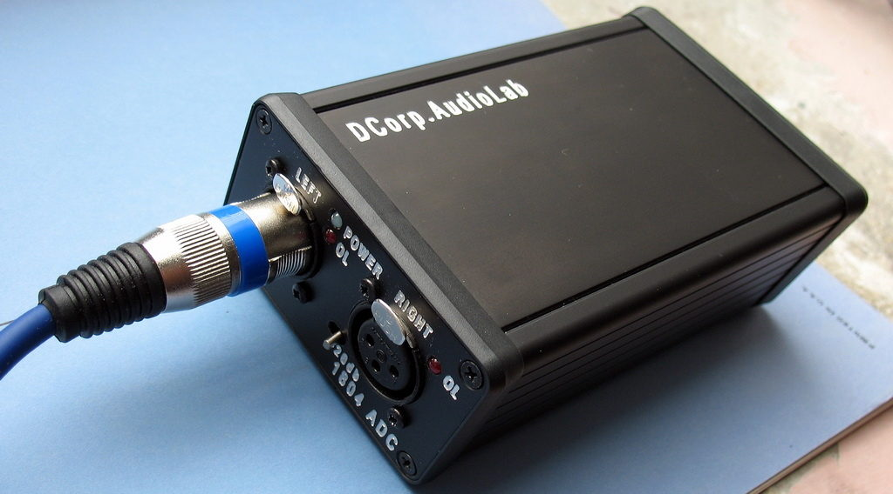
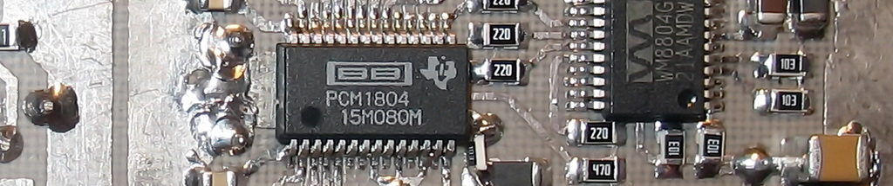
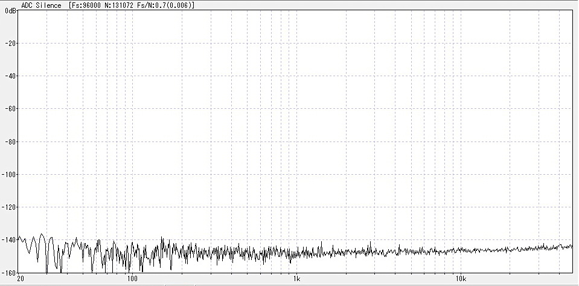
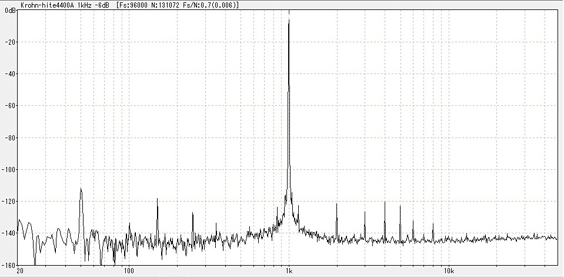

ADC 1804
The Analogue to Digital converter is designed both for instrumental measurements and sound recording.
PCM1804 chip in combination with low noice power supply and high precission passive parts was used for the project.
It gives us -140 dB of noice level.
And no visible distorsion on graps. Moreover an amazing presence of sound recordings.